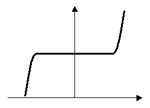
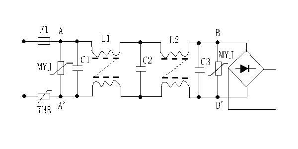

|
|
| 当前位置：电脑报电子版 > 1999 年 > 45 期 > 硬件周刊 > 为电脑加装双重过压保护 |
| 《 为电脑加装双重过压保护 》 |
| 和AT电源相比，ATX电源增加了网络唤醒、辅助＋5VSB电源等功能，使其功能有了较大的改进，更符合“绿色电脑”的节能标准。从使用者的角度来看，ATX电源和AT电源最大的不同是ATX电源取消了电源开关，代之以主机面板上的轻触开关。由于使用上的习惯，电脑爱好者们在关机后也很少有人想到要拔下电源插头，造成的后果是ATX电源没有完全切断，其内部仍有部分电路在工作，浪费了能源不说，由于电压不稳，易对电源电路内部造成损伤。 为了确保万无一失，我们最好为电脑加装必备的保护措施，因此电脑的电源输入回路、MODEM的输入信号线应该有可靠的过压保护装置。 解剖市场上号称具有双重过压保护功能的电源，我发现所谓双重过压保护，就是在电脑电源的输入回路设置了两个过电压保护元件——压敏电阻器，一旦由于种种原因，电脑的供电线路通过浪涌过电压和感应过电压，超过了压敏电阻器的最高工作电压，压敏电阻器将瞬间导通，吸收过电压，使电压保持平稳；如果非用电高峰期，电脑的供电电压升高或由于缺相、错相等造成供电电压大幅升高，压敏电阻器会因吸收的电流过大而烧毁，产生的大电流同时会将保险丝融断，切断电脑与外界供电线路的联接，从而保护电脑不受到进一步的破坏。 压敏电阻器简称压敏电阻，是一种在某一特定的电压范围内其电导随电压的增加而急剧增大的敏感元件。由于它具有稳压和过电压保护等功能，故人们称为“限幅器”、“斩波器”或“浪涌吸收器”。压敏电阻的种类很多，其中最有代表性的当推氧化锌压敏电阻。它以氧化锌为主要原材料，加上少量的微量元素烧结而成。氧化锌压敏电阻的伏安特性如图一。从图中可以看出，压敏电阻具有陡峭的非线性特性，在一定的电压范围内处于断开状态，相当于一个小电容的作用，其漏电电流≤50μA，故功耗甚微；它的两端电压一旦超过导通电压，压敏电阻的电阻值急剧下降，很快导通，其工作电流增加几个数量级。从图中可以看出，压敏电阻的特性曲线属对称型，这种特性可用于吸收交流正、负极性的浪涌电压。压敏电阻的特点之一是平均持续功率小，在各种电子产品中所用的最大功率为1瓦，故不能长时间工作于导通状态；其次是瞬时功率大于数千瓦，对过电压的响应时间非常快，一般不大于50ns；另外，该元件的适用电压范围特别广，可从几伏到几十万伏，而且它还具有残压低、体积小、价格低等特点。 压敏电阻选用是否正确，直接影响保护效果和使用寿命，主要是根据使用电路情况和工作情况（间断工作或不间断工作）来选取适当标称电压的压敏电阻。一般来说，从保护的实际效果出发，我们总希望把压敏电阻的标称电压选得低些为好，但这与元件的工作可靠性是有矛盾的。如果压敏电阻的标称电压选得过低，由于压敏电阻器的电压温度系数为负值，在工作电压下，压敏电阻要消耗一定的功率，使元件本身发热而温度上升，导致压敏电压下降，从而产生恶性循环，最终压敏电阻被烧毁，因此，标称电压不宜过低。 我们在电源输入回路中采用的压敏电阻型号为MYJ10－471K，MY指压敏电阻，10指压敏电阻的外形尺寸，即Ф10mm，471指标称工作电压，最后一位数字指0的个数，即为470V（423～517），即当电压达到该范围时，压敏电阻导通，符号K指允许误差为10％。图2为ATX电源中输入电路部分电路图，为达到较好的保护效果，一般可在图中A－A’ 、B－B’处接上适当的压敏电阻。当雷电从电源线窜入或由机内自感电动势的反窜等引入的过电压。作用到压敏电阻的两端时，压敏电阻立即导通而以电流的形式迅速将过电压泄放掉，从而保护了电源中相关部件不被过电压击毁。 为了防备万一，在MODEM输入的电话线上也要加装相应型号的压敏电阻，把压敏电阻并连在输入电话线的两端即可，选用的压敏电阻型号为MYJ05－271K，其导通电压为270V，具体方法见前几期的《电脑报》。 由于压敏电阻导通时产生的浪涌电流的峰值很大，在这个电流作用下压敏电阻本身的电阻很小，如果不注意接线的选择和接法，接线电阻和接线电感对整体的影响很大，将会导致电压升高，响应延迟，从而影响保护效果。因此压敏电阻和外电路的连线应有足够的截面积，走线应尽量短，焊接要牢固，以取得应有的效果。 到ATX电源没有过压保护装置带来的危害后，笔者近一两年内所购买的电源都加装了过压保护电路，所取得的效果也很明显。上月由于供电局的原因，朋友所居住的楼内电压升高，烧毁了楼内所有开着的家用电器，包括几台电脑。朋友当时也正在使用电脑，电源也被烧毁。解剖损坏的电源，发现是保险丝烧断，同时加装的压敏电阻被严重烧糊变黑。拆除烧毁的压敏电阻，初略测量电源没有其它明显的故障，换新保险后，通电试机，电脑恢复正常。而另外几台电源内电路被严重损坏，并有两块主板被株连烧毁。如果没有过压保护装置，该电源的后果将不堪设想。鉴于过压保护的重要性，特撰此文和大家共享。我的E－Mail：wangaay@jn－public.sd.cninfo.net。 （山东 李宏） |
| 下载本期推荐软件 | 页 首 |
| 《电脑报》版权所有，电脑报网站编辑部设计制作发布 |